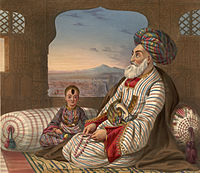
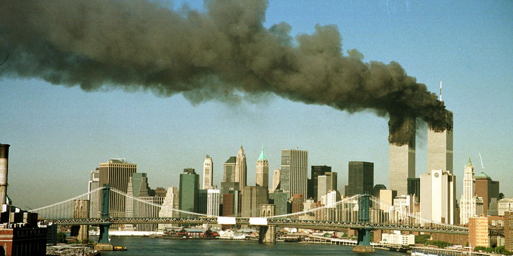

Afeganistão
História e Formação
O territrio atual do Afeganistão tem um histórico de ocupação milenar, já que a região é considerada um ponto estratégico, em especial para o estabelecimento de rotas comerciais entre Ocidente e Oriente. Sendo assim, muitos exploradores, como persas, macedônios, turcos e mongóis, ocuparam trechos do país ao longo dos períodos históricos.
A população local vivia de atividades de subsistência e os povos estrangeiros exploravam basicamente atividades relacionadas ao comércio. Os árabes também povoaram a região, sendo os responsáveis pelo estabelecimento da religião islâmica no país.
O período moderno do Afeganistão teve início no século XIX, por meio da invasão do Império Britânico. A Grã-Bretanha ocupou a região até meados do século XX, mais precisamente em 1919, quando o AFEGANISTãO CONQUISTOU A SUA INDEPENDêNCIA. Em um primeiro momento pós-independência, foi instituída uma monarquia no país, sendo substituída por um regime republicano, já no ano de 1973. Nesse período, o Afeganistão vivenciou um momento de relativa prosperidade econômica e social.

Em 1978, o Partido Democrático do Afeganistão (PDPA) realizou um golpe de Estado e declarou a criação de um regime socialista. Entretanto, diante de sua instabilidade e fracasso iminente, a União Soviética invadiu o Afeganistão em 1979, visando fortalecê-lo e permaneceu até 1989.
Esse período é conhecido como a Primeira Guerra do Afeganistão, caracterizada pela disputa de poder entre o PDPA, aliado à URSS, e os grupos rebeldes. Dentre eles, os mujahidins, aliados aos EUA. Importante ressaltar que o contexto de Guerra Fria foi marcado pelo apoio estadunidense a grupos contrários à URSS, e vice-versa, em diversas partes do mundo.
Com o fim da União Soviética, os grupos opositores se fragmentaram disputando poder entre eles. Em 1994, o Talibã, um movimento religioso fundamentalista que reivindicava a restauração em nome do Islã, gradualmente, ascendeu ao poder. Em 1999, ele já controlava todo o Afeganistão, menos a região nordeste.
As forças talibãs, a partir do domínio do poder no cenário político do Afeganistão, nos anos 1990, instituíram um governo central baseado na aplicação de rígidos códigos legais baseados no islamismo. Por sua vez, com o apoio do Talibã, o Afeganistão tornou-se um dos principais centros de formação de extremistas islâmicos.
Período Recente
Localização e Fronteiras

O Afeganistão é um país
sem litoral, montanhoso, localizado no centro da ásia, estando na
encruzilhada entre o Sul da ásia, a ásia Central e a ásia Ocidental.
Faz fronteira com o Paquistão ao sul e ao leste, com o Irã ao oeste,
com o Turcomenistão, Uzbequistão e Tajiquistão ao norte e com a China
no nordeste. Ocupando 652 230 km², sendo o 41º maior do
mundo em área, o Afeganistão é predominantemente montanhoso, com
planícies no norte e sudoeste. Cabul é a capital e a maior cidade, com
uma população estimada em 4,6 milhões, sendo o 37.º país mais
populoso do mundo, composta principalmente de etnias pastós, tajiques,
hazaras e usbeques.
Apesar de ter numerosos rios e
reservatórios, grande parte do país está seco. A bacia endorreica de
Sistan é uma das regiões mais secas do mundo. Além da chuva habitual
que cai no Afeganistão, o país recebe neve durante o inverno no
Indocuche e nas Montanhas Pamir, posteriormente, o derretimento da
neve na primavera entra nos rios, lagos e riachos. No entanto, dois
terços da água do país flui para os países vizinhos do Irã, Paquistão
e Turcomenistão. O estado necessita de mais de 2 bilhões de dólares
para reabilitar os sistemas de irrigação, de modo que a água seja
gerida corretamente.
Atividades Econômicas
O Afeganistão é no geral um país extremamente pobre, possui baixo índice de desenvolvimento e altos níveis de violência. Sua principal atividade econômica é a agricultura sendo baseada no cultivo da papoula que é matéria prima do ópio e na criação de gado. Sua agricultura foi fortemente afetada por uma severa seca que ocorreu dos anos 1998 - 2001 gerando um grande impacto na economia. De modo geral, a economia afegã deve seu baixo desenvolvimento à situação de guerra permanente, à falta de um governo central efetivo e à fragmentação da sociedade em grupos tribais.

11 de setembro de 2001
Foram realizados diversos ataques os EUA mas nenhum foi pior do que o atentado às torres gêmeas no dia 11 de setembro de 2001 quando aviões comerciais dos Estados Unidos, sequestrados por terroristas da Al Qaeda e atingiram as Torres Gêmeas do World Trade Center, em Nova York e parte do edifício do Pentágono em Washington. Milhares de pessoas morreram nesses atentados e o mundo assistiu estupefato à ousadia de Bin Laden....

Guerra ao Terror e Ocupação Americana
A guerra ao terror foi uma campanha militar em resposta ao atentado do
11 de setembro, o então presidente George Walker Bush declarou a
guerra ao terror como parte de sua estratégia global de combate ao
terrorismo.
A Guerra ao Terror significou um esforço de
mobilização em diferentes planos: ideológico, político-diplomático,
econômico, militar, de inteligência e contrainteligência. Como parte
das operações militares da "Guerra do Terror", os Estados
Unidos invadiram e ocuparam países como o Afeganistão e o Iraque.
Desde o início da Guerra ao Terror, a Anistia Internacional registrou
e denunciou centenas de casos graves de violações dos direitos
humanos, incluindo as torturas na prisão de Guantánamo, as
extraordinary renditions (transferências de prisioneiros de um país
para outro sem obedecer aos procedimentos judiciais normais de
extradição), as prisões secretas da CIA, etc.

O principal alvo da chamada
"Guerra ao Terror" foram os Estados supostamente apoiadores
de movimentos ou grupos terroristas, referidos como
"Estados-bandido" ou "Estados-pária" (Rogue
States) os mesmos que inicialmente eram chamados de "Eixo do
Mal". Uma das controvérsias mantidas durante todo o período dos
anos 2000 diz respeito à classificação desses inimigos, já que, na
prática, os Estados Unidos e seus aliados da OTAN é que definiram quem
é ou não terrorista e quem são os governos que apoiam ou não o
terrorismo.
Saída dos EUA em 2021
A retirada das tropas americanas no Afeganistão foi a saída programada
de todas as Forças Armadas dos Estados Unidos no Afeganistão,
inicialmente prevista para acabar em 11 de setembro de 2021, mas que
acabou sendo completada em 30 de agosto.
O processo de retirada
começou a acelerar consideravelmente em 7 de julho, quando a queda do
Afeganistão aparentou ser inevitável após o início de uma grande
ofensiva dos Talibãs. Na semana seguinte, foi lançada a Operação
Refúgio dos Aliados, que começou a evacuar estrangeiros e
afegãos que trabalharam para a OTAN. Quando a cidade de Cabul caiu nas
mãos dos islamitas, um pandemônio tomou conta da capital. O presidente
Joe Biden mandou 6.000 militares americanos tomarem o principal
aeroporto da capital e começaram a evacuar quantas pessoas fossem
possíveis. Muitas pessoas, dentro e fora dos Estados Unidos,
criticaram a execução da retirada.
Em 30 de agosto de 2021, após um ano e seis meses, os Estados Unidos completou sua retirada militar do Afeganistão. Nas últimas três semanas houve um grande esforço para também evacuar quantos civis afegãos fosse possível. No total, todos os militares dos Estados Unidos (com quase todos os seus equipamentos), a maioria dos cidadãos americanos e mais de 117 000 civis afegãos foram evacuados com sucesso pelo Aeroporto Internacional de Cabul.

Segue a recomendação de vídeo do canal jornalística CNN sobre o tema :
Link do Vídeo - CNN